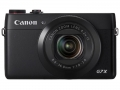
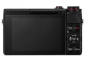
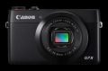
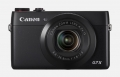
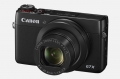
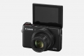

器材库 > 不可换镜头数码相机 > PowerShot G7 X

规格总览
发布日期
2014-09-15
厂家推荐价格
66,800.00 （日元）
防水
否
影像规格
影像传感器
CMOS
影像传感器尺寸
13.2×8.8
总像素
2090万
有效像素
2020万
影像处理器
DIGIC 6
静态图像格式
JPEG, RAW
短片尺寸
1920x1080
镜头和对焦
等效35mm画幅焦距
24-100mm
最大光圈
f/1.8-2.8
最近对焦距离
5-40cm
AF辅助灯
有
曝光控制
ISO感光度
12800, 125
连拍
约6.5张/秒（自动、P模式）
闪光灯
内置闪光灯
无
取景规格
LCD类型
TFT LCD
LCD尺寸
3.0英寸
LCD像素
104万
LCD特性
触摸屏, 翻转屏
文件输入/输出
存储卡
SD/SDHC, SDXC
无线功能
Wi-Fi, NFC
外观
尺寸
103.0×60.4×40.4mm
重量
(仅机身）约279g
iami19782015-09-13 10:444.38 分
操作性 4.50功能性 4.00美观性 4.50趣味性 5.00耐用性 4.00性价比 4.00解像力 4.50色彩还原 4.50
12315jc2014-09-30 13:473.88 分
操作性 4.50功能性 4.00美观性 3.50趣味性 3.00耐用性 3.50性价比 4.00解像力 4.00色彩还原 4.50
产品图 / 样片





评测 / 相关文章
- 详细内容 （存档）
- 无反相机劲敌出现 佳能G7X便携相机评测 （存档）
- ［试用］小相机高画质 佳能G7 X云南嗨拍 （存档）
- ［试用］卡片机大PK 佳能G7 X画质实测 （存档）
- ［试用］佳能PowerShot G7X开箱 （存档）
- ［资讯］佳能PowerShot G7 X官方样片欣赏 （存档）